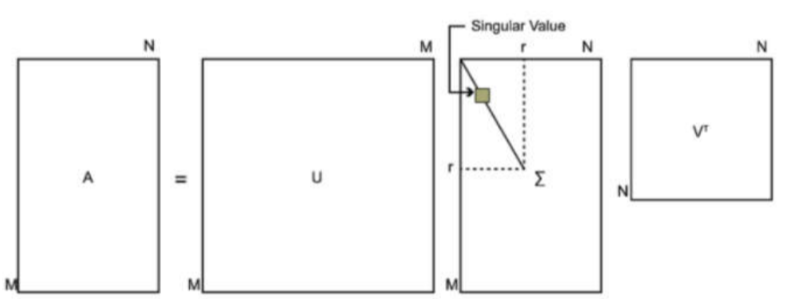

206 Project
Singular Value Decomposition (SVD)
Introduction of SVD
SVD is a fundamental matrix decomposition technique that decomposes a matrix into the product of three matrices which has a wide range of applications, including dimensionality reduction, matrix inversion, and recommendation systems.
Given a matrix (A), SVD decomposes it into the following form: \[ A = U\Sigma V^T \] (U) and (V) are orthogonal matrices.\[ \Sigma \text{ is a diagonal matrix.} \]
- The column vectors of (U) are called the left singular vectors.
- The column vectors of (V) are called the right singular vectors.
- The diagonal elements of () are called the singular values, which are typically arranged in descending order.
In SVD, the singular values represent the significance of the original matrix. Larger singular values correspond to the features represented by the left and right singular vectors that contribute more to the data.
A common application of SVD is in its truncated form. By retaining the larger singular values and their corresponding singular vectors, SVD can achieve dimensionality reduction, extracting the main features of the data.
The Definition of SVD

Solving the SVD Matrix
So, how can we determine the three matrices \(U\), \(\Sigma\), and \(V\) in the SVD decomposition of a matrix?
If we calculate the transpose of matrix \(A\) and multiply it with \(A\), we obtain a square matrix \(A^T A\) of size \(n \times n\). Since \(A^T A\) is a square matrix, we can perform eigenvalue decomposition to find its eigenvalues and eigenvectors as shown below:
\[ (A^T A)v_i = \lambda_i v_i \]
Indeed, by performing matrix transposition, \(A^T A\) can be expressed as a symmetric matrix. This allows us to solve for all eigenvalues and corresponding eigenvectors. By combining all eigenvectors of \(A^T A\) into an \(n \times n\) matrix \(V\), we can use this as the \(V\) matrix in the SVD formula.
If we calculate the transpose of matrix \(A\) and multiply \(A\) with \(A^T\), we obtain another square matrix \(A A^T\) of size \(m \times m\). Since \(A A^T\) is also a square matrix, we can perform eigenvalue decomposition to find its eigenvalues and eigenvectors as shown below:
\[ (A A^T)u_i = \lambda_i u_i \]
Thus, we can obtain the eigenvalues and their corresponding eigenvectors of the \(m \times m\) matrix \(A A^T\). By combining all the eigenvectors of \(A A^T\) into an \(m \times m\) matrix, we obtain the \(U\) matrix in the SVD formula.
\[ A A^T = U\Sigma V^T V\Sigma^T U^T = U\Sigma\Sigma^T U^T \]
\[ A^T A = V\Sigma^T U^T U\Sigma V^T = V\Sigma^T\Sigma V^T \]
Each eigenvector of \(A A^T\) corresponds to the left singular vectors of \(A\). Once \(U\) is determined, the calculation of singular values becomes straightforward. Since \(\Sigma\) is a diagonal matrix whose elements are singular values, we only need to compute each eigenvalue to obtain the singular values.
\[ A = U\Sigma V^T \implies AV = U\Sigma V^T V \implies AV = U\Sigma \implies Av_i = \sigma_i u_i \]
R code for the SVD
# Example matrix A
A = matrix(c(1, 2, 3, 4, 5, 6), nrow = 3, ncol = 2)
# Step 1: Compute A^T A and A A^T
ATA = t(A) %*% A
AAT = A %*% t(A)
# Step 2: Compute eigenvalues and eigenvectors
eig_ATA = eigen(ATA)
eig_AAT = eigen(AAT)
# Step 3: Construct matrix V (right singular vectors)
V = eig_ATA$vectors
# Step 4: Construct matrix U (left singular vectors)
U = eig_AAT$vectors
# Step 5: Construct singular value matrix Σ
singular_values = sqrt(eig_ATA$values)
Sigma = diag(singular_values, nrow = nrow(U), ncol = ncol(V))
# Step 6: Verify decomposition
A_reconstructed = U %*% Sigma %*% t(V)
list(
U = U, # Left singular vectors
Sigma = Sigma, # Diagonal matrix of singular values
V = V, # Right singular vectors
Reconstructed_A = A_reconstructed # Matrix reconstructed from U, Σ, and V^T
)